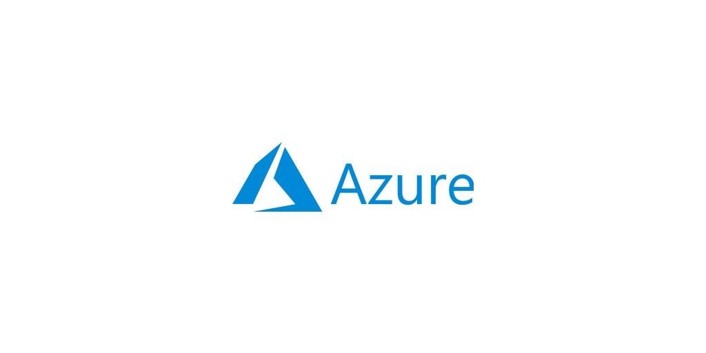

クラウドとは¶
従来のインフラの選択肢としてはオンプレが主流だったと思います。
自社でサーバー構築に必要なリソース、ハードウェア・ソフトウェア・ネットワーク・土地・など、を保持し、リソースを管理するための専門家を必要としていました。
AWSをはじめとするクラウドでは、ベンダーが提供するリソースをカスタマーは使用する分だけ課金して利用することができるようになりました。
3大クラウドベンダー¶
2019年時点、AWS, GCP, Azureの3大クラウドベンダーと呼ばれる大手クラウドベンダーが首位を獲得しています。
以下はガートナー（調査機関）が発表したクラウド市場予測のレポートです。

これら3大クラウドベンダーの特徴についてみていきましょう。
AWS¶

Amazon Web Serviceの名の通り、Amazonによって開発提供されているインフラストラクチャサービスです。
個人的に、AWSの掲げる「お客様を第一に考える」というビジョンのとおり、非常に丁寧かつ迅速なサポートを受けられていると実感します。
他に特徴としては安定していること・カスタマーの責務/自由度が高く様々な表現をすることが可能です。
これは良いことである反面カスタマーによって異なる実装ができてしまい、オレオレクラウドアーキテクチャができてしまいがちです（Lambdaによるグルーコードが増え続けるなど...）。
GCP¶

Google Cloud Platformの名の通り、Googleによって開発提供されているインフラストラクチャサービスです。
特徴としては最初から必要なコンポーネントが組み上げられ、それがサービスとして提供されています。
また、Googleが開発した先進的な技術を使用できるのはエンジニアとして楽しいポイントでしょう。
Azure¶

Microsoftが提供しているクラウドサービスです。
Microsoftが提供するということもあってWindowsやActiveDirectoryを触りやすいです。
クラウドネイティブ¶
近年用いられるようになった単語として"クラウドネイティブ"という言葉があります。
クラウドネイティブはクラウドベンダー（AWS, GCP, etc...）の用語ではなく、オンプレミスで実現するプライベートクラウド、クラウドベンダーの力を借りるパブリッククラウドともに対象とした用語です。
クラウドネイティブとは、近代的なコンテナ化されていてスケーラブルかつ可観測なアーキテクチャを指す用語です。
Cloud Native Computing Foundation¶
クラウドネイティブなプロダクトをホストするCNCFという中立団体があります。
代表的なプロダクトとしてKubernetes・Prometheus・gRPC・Containerd（Dockerのコア）がホストされています。 技術選定の際には目を通して、どのようなプロダクトがあるか、どのように解決しているのかを見てみると良いでしょう。
クラウドネイティブへの道のり¶
Trail Map というアプリケーションのクラウドネイティブ化や、クラウドネイティブなプロダクト導入についてステップバイステップでの解説資料があります。 現在携わっているソフトウェアをクラウドに最適な形にしたい場合はTrail Map に沿ってクラウドネイティブ化を実践すると良いでしょう。

Trail Map には10ステップあり、まずは最初の4ステップを確実に導入すると良いでしょう。
- コンテナ化
- まずはコンテナ化です。
- The Twelve-Factor App に則ってアプリケーションのコンテナ化をしましょう。
- コンテナを実現するためのツールは複数ありますが、こだわりがなければDocker 1択だと思います。
- CI/CD
- 次にCI/CDです。
- クラウドネイティブ化するにあたってCI/CDは前提です。
- CIはCircleCI Enterprise で良いでしょう。
- CDは過渡期だと感じます。最初はCIツールですが、CircleCI EnterpriseでCDまでやってしまい、徐々にCodePipeline、Argo CD、Spinnakerなどに移行しましょう。
- オーケストレーション
- コンテナオーケストレーションとそのコード化をしましょう。
- ECSもしくはKubernetesが選択肢に入ります。学習/設計/開発/運用コストが払えない場合はECS/FargateもしくはCloudRunを選択すると良いでしょう。
- 可観測
- 監視ツールを導入しましょう。
- メトリクス・ログ・トレースをきっちり監視しましょう。
- Prometheus, fluentd, datadogなど、既存の資産を使うことも可能です。
- このドキュメントではどのベンダーでも使用可能なSaaSのDatadogを使用することを想定します。
5ステップ目移行はサービスメッシュや分散データストアなどになってきます。
4ステップ目までを実現し、こなれてきてからこの先に進みましょう。